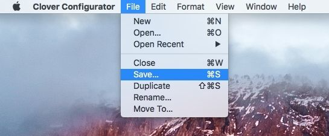

Настройка звука
на хакинтоше
§Введение
Настройка звука на хакинтоше может занять даже больше времени, чем, собственно, сама установка macOS.
Эта статья содержит несколько инструкций, которые не являются панацеей от всех проблем, но могут помочь так же, как помогли мне.
§Codec Commander
Кекст Codec Commander используется для управления контроллером EAPD, включающим внешний усилитель для встроенных в материнские платы кодеков (звуковых карт). Обычно такие усилители установлены в колонках и наушниках. Когда кодек теряет питание, усилитель тоже теряет питание и включить его обратно без дополнительной помощи невозможно. Как правило кодек теряет питание в двух случаях:
- компьютер перешел в режим сна и затем вышел из него;
- компьютер начал переходить в режим сна, но спустя небольшой промежуток времени (около 5-20 секунд) была нажата какая-либо клавиша и переход в сон отменился (задержка сна на полминуты — это особенность macOS).
В обоих случаях может показаться, что звук есть, но на самом деле его нет или он очень тихий. Для решения этой проблемы, собственно, и нужен Codec Commander.
Настройка
Последняя версия Codec Commander доступна на bitbucket.org. Но не все так просто: без предварительной настройки под ваш кодек кекст может не заработать. Подробное руководство по настройке Codec Commander находится на GitHub. Однако новичку будет очень сложно в нем разобраться. Самый простой способ — найти уже настроенный кекст под кодек своей системы. Я нашел Codec Commander для ALC1150 на tonymackx86.com.
Установка кекста
Устанавливать Codec Commander надо в системную папку. Рекомендую сделать это через Kext Utility.
§Завод карт Creative
Для настройки звуковых карт Creative на хакинтоше энтузиасты разработали кекст kXAudioDriver, он заводит на хакинтоше следующие карты:
- Creative Live!
- Audigy 1/2
- Audigy RX
- EMU E-DSP
Скачивание и обсуждение кекста доступно на форуме insanelymac.com.
§Метод AppleALC
AppleALC — кекст, который значительно упрощает настройку звука на хакинтоше. Он позволяет включить поддержку встроенного звукового оборудования компьютера без внесения модификаций в систему и динамически загружает все требуемые изменения в AppleHDA и другие кексты.
AppleALC может помочь, если после других методов завода встроенного звука наблюдаются проблемы.
Поддерживает ли ваш кодек AppleALC можно узнать на wiki-странице проекта. Там же есть и подробное руководство по его установке.
Перед установкой AppleALC требуется отменить все манипуляции с настройкой звука, вернув в систему оригинальный, не затронутый вмешательствами кекст AppleHDA, а также удалить некоторые строки, внесенные в файл конфигурации Clover, которые мог произвести, например, MultiBeast.
Шаг 1. Получение оригинального AppleHDA
На загрузочной флешке, созданной UniBeast, помимо значка «Установка macOS High Sierra» есть множество скрытых системных файлов. Для того чтобы добраться до стандартных кекстов системы, необходимо сделать их видимыми.
С помощью сочетания ⌘ + Shift + . (точка) можно отображать скрытые файлы в macOS и таким же способом их скрывать.
- Откройте флешку с macOS и отобразите скрытые папки.
- Перейдите в System > Library > Extensions.
- Скопируйте AppleHDA.kext на Рабочий стол или в отдельную папку.


Шаг 2. Восстановление AppleHDA
- Выберите в строке меню пункт «Переход к папке».

- И введите путь к системной папке: /System/Library/Extensions.
- Найдите у удалите AppleHDA.kext.
- Установите оригинальный AppleHDA с помощью Kext Utility.
Шаг 3. Установка AppleALC
- Загрузите Lilu.kext, который требуется для работы AppleALC, и установите его с помощью Kext Utility.
- Загрузите AppleALC.kext.
- Смонтируйте раздел EFI от macOS.
- Откройте файл конфигурации Clover — config.plist через Clover Configurator.
- Перейдите в раздел Kernel and Kext Patches и удалите строки, имеющие отношение к AppleHDA/HDA.
- Укажите layout-id. Подробнее об этом рассказано тут: github.com/vit9696/AppleALC/
wiki/Supported-codecs . Обычно подходит стандартное значение «1».
- (Необязательно) Чтобы позволить многим системам на основе процессоров семейства Skylake работать с AppleALC, необходимо переименовать HDAS в HDEF при помощи нескольких строк в файле конфигурации Clover. Для этого на вкладке DSDT найдите форму Patches и введите в каждое из перечисленных полей следующие значения:
- “Rename HDAS to HDEF” в поле Comment;
- 48444153 в Find [HEX];
- 48444546 в Replace [HEX].
- Скопируйте AppleALC.kext в папку кекстов Clover (..EFI/CLOVER/kexts/Other/).
- Сохраните изменения и перезагрузите компьютер.
